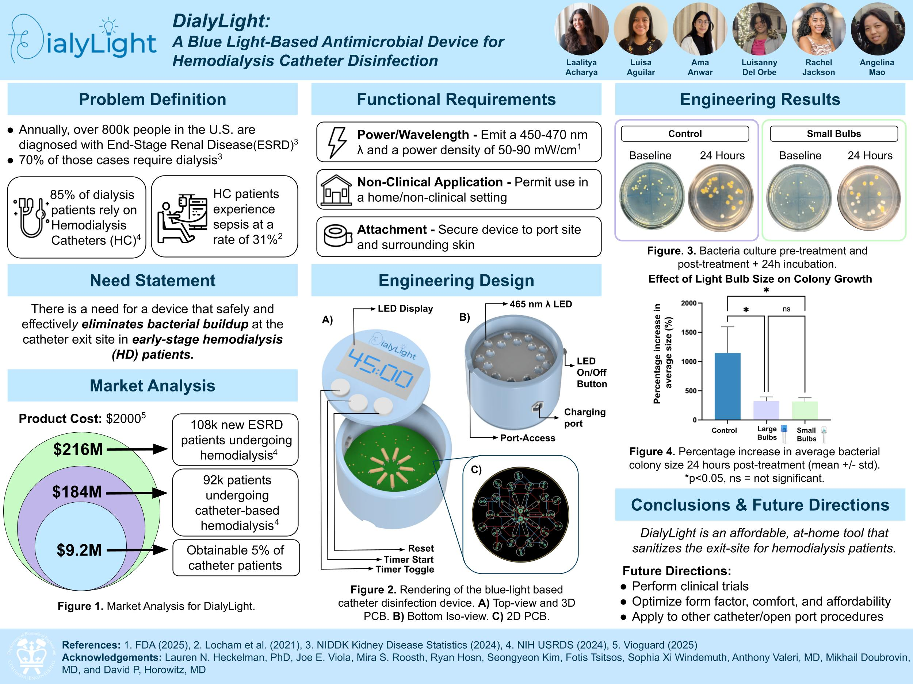

← Back to research
RESEARCH / BRISTOL MYERS SQUIBB
Preclinical MRI Analysis
Developing and evaluating image-processing workflows for preclinical brain MRI.

Overview
Worked with preclinical imaging data to explore automated brain segmentation and quantitative image analysis.
Methods
Used MATLAB to process 9.4T Bruker MRI data, investigate intensity correction, compare segmentations with an anatomical atlas, and evaluate results using Dice similarity and SSIM.
Findings
The work produced an image-analysis workflow and comparisons of segmentation quality. Add approved quantitative results and figures before publishing.